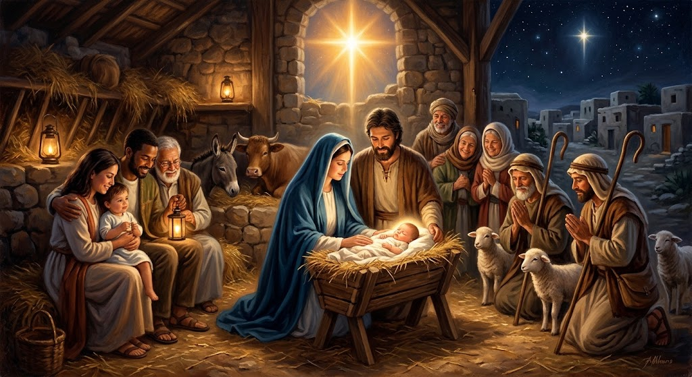
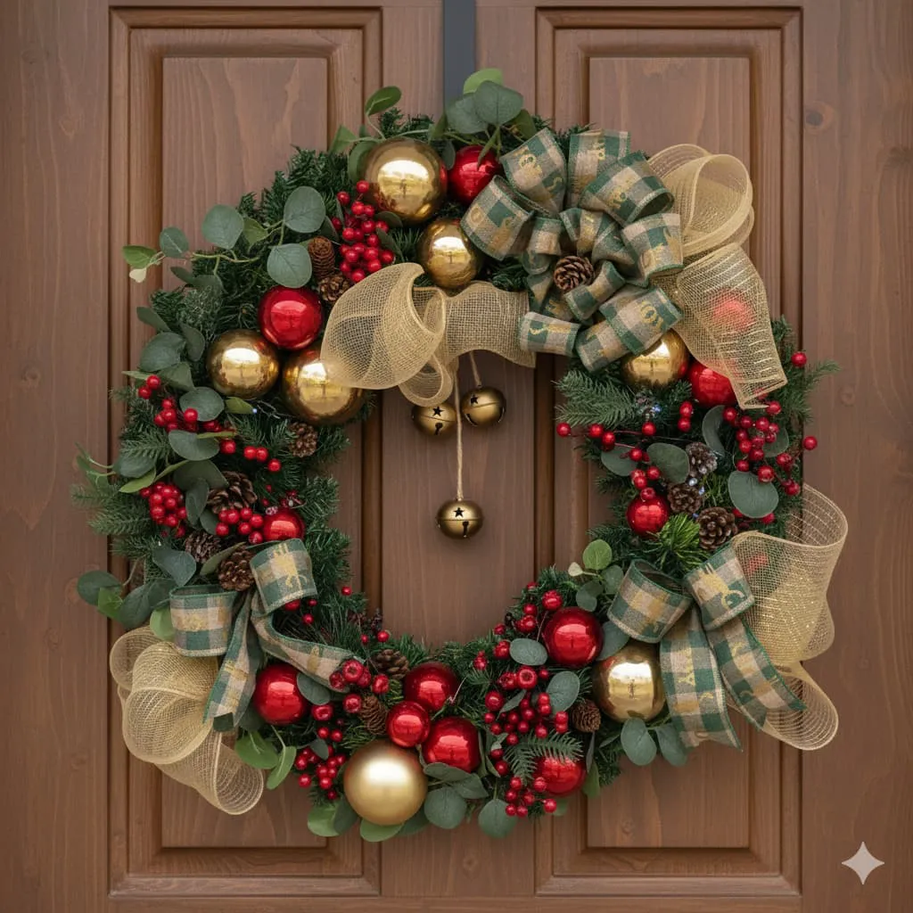
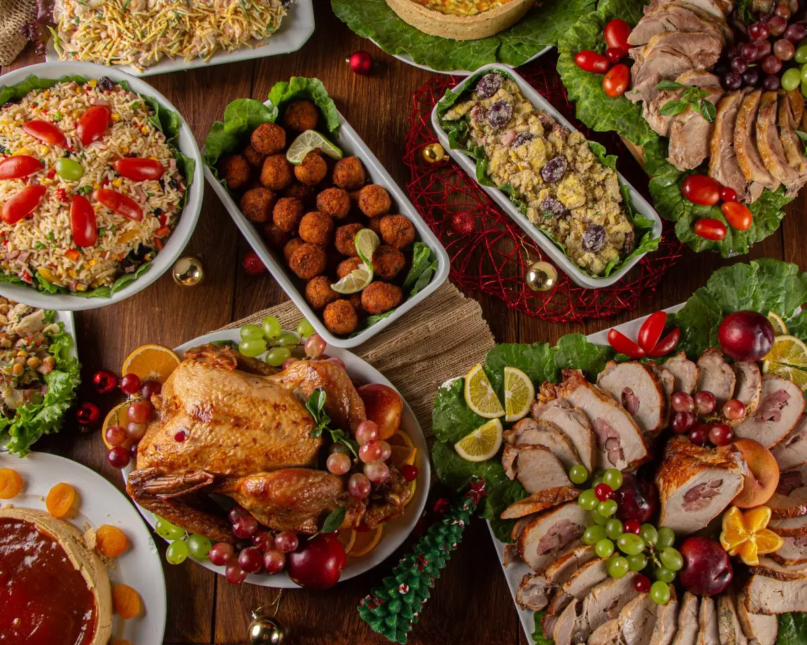

O Verdadeiro Significado do Natal
O Natal é, antes de tudo, uma celebração de amor, esperança e união. Para os cristãos, a data lembra o nascimento de Jesus Cristo, um símbolo de paz e generosidade que atravessa séculos e inspira milhões de pessoas ao redor do mundo.

Tradições de Natal
- 🎄 Montar a árvore de Natal
- 🎅 Esperar o Papai Noel
- 🕊️ Montar o presépio
- 🍽️ Fazer a ceia em família
- 🎁 Trocar presentes
Receitas de Natal
Separamos algumas receitas clássicas para deixar a sua ceia ainda mais especial:
Peru de Natal
O astro da ceia! Temperado na véspera com alho, limão e ervas, fica suculento e dourado. Ver receita completa
Arroz com Passas
Acompanhamento tradicional brasileiro, com um toque doce que combina com as carnes. Ver receita completa
Rabanada
Pão molhado no leite, frito e passado no açúcar com canela. Um doce simples e irresistível. Ver receita completa
Panetone Trufado
Recheado com creme de chocolate, é a sobremesa queridinha das festas. Ver receita completa
Decoração de Natal
Com um pouco de criatividade, dá para transformar a casa inteira em um cenário natalino. Veja algumas ideias:
🎄 A Árvore Encantada
Escolha um tema de cores, como vermelho e dourado, azul e prata ou branco e dourado.
Guirlanda na Porta

A guirlanda dá boas-vindas a quem chega.
🍽️ Mesa da Ceia

Capriche em um caminho de mesa e um centro de mesa com velas.